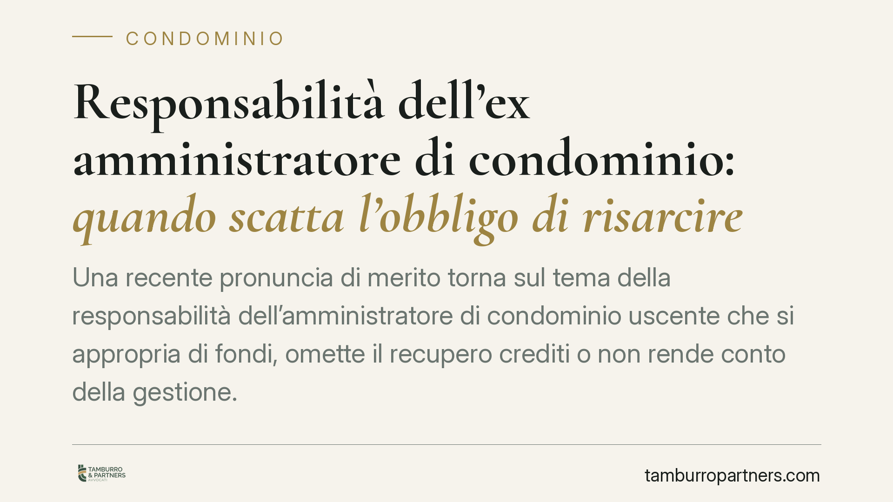

Responsabilità dell'ex amministratore di condominio: quando scatta l'obbligo di risarcire
Una recente pronuncia di merito torna sul tema della responsabilità dell'amministratore di condominio uscente che si appropria di fondi, omette il recupero crediti o non rende conto della gestione. Il principio è chiaro: la violazione del mandato espone a obbligo restitutorio e risarcimento. Resta invece dibattuto il nodo della mediazione obbligatoria.

Il caso
Un condominio agisce contro la propria ex amministratrice chiedendo la restituzione di somme e il risarcimento dei danni. Le condotte contestate: appropriazione di importi condominiali, distrazione di fondi e omesso recupero di crediti verso i condomini morosi.
Il Tribunale accoglie la domanda, affermando la responsabilità dell'amministratrice per violazione degli obblighi derivanti dal mandato. Ne consegue l'obbligo di restituire quanto indebitamente trattenuto e di risarcire il pregiudizio ulteriore subìto dall'ente di gestione.
*Nota redazionale: gli estremi della pronuncia (Tribunale di Nocera Inferiore, n. 1975/2025) sono in corso di verifica. I principi esposti riflettono orientamenti consolidati in materia e prescindono dalla singola decisione.*
Inquadramento normativo
Il rapporto tra amministratore e condominio si inquadra nello schema del mandato (artt. 1703 e seguenti del Codice civile). L'amministratore agisce per conto della collettività condominiale ed è tenuto a eseguire l'incarico fedelmente.
Due norme vanno tenute distinte, perché individuano piani diversi.
L'art. 1710 c.c. disciplina l'esecuzione del mandato e impone al mandatario di eseguirlo con la dovuta diligenza. Il parametro concreto di tale diligenza si ricava dall'art. 1176 c.c.: il primo comma richiama la diligenza del buon padre di famiglia; il secondo comma, applicabile all'amministratore che opera come professionista, impone una diligenza qualificata, valutata in relazione alla natura dell'attività esercitata. È questo secondo parametro a rilevare per l'amministratore-professionista.
Il perno dell'obbligo restitutorio è l'art. 1713 c.c., che impone al mandatario di rendere il conto del proprio operato e di rimettere al mandante tutto ciò che ha ricevuto in ragione del mandato. È su questa norma che si fonda il dovere dell'ex amministratore di restituire le somme gestite e non giustificate.
Quando l'ammontare esatto del danno non sia determinabile con precisione, il giudice può procedere alla liquidazione equitativa ai sensi dell'art. 1226 c.c.
### Il nodo della mediazione
La pronuncia esclude che l'azione di responsabilità contro l'ex amministratore sia soggetta a mediazione obbligatoria. Si tratta però di una lettura da maneggiare con cautela.
L'art. 5 del D.lgs. 28/2010 e l'art. 71-quater disp. att. c.c. includono le "controversie in materia di condominio" tra quelle sottoposte alla condizione di procedibilità. Qualificare l'azione di responsabilità verso l'ex amministratore come non condominiale — e quindi esente da mediazione — è tesi sostenibile ma non pacifica: la giurisprudenza non è univoca. Prima di avviare la causa è prudente considerare entrambe le ricostruzioni.
Implicazioni pratiche
Per il condominio, la pronuncia conferma che l'amministratore uscente non può sottrarsi al controllo sulla propria gestione. L'obbligo di rendiconto non si estingue con la cessazione dell'incarico.
Per l'amministratore, il messaggio è altrettanto netto: la gestione dei fondi altrui richiede tracciabilità e documentazione puntuale. L'omesso recupero dei crediti — non solo l'appropriazione diretta — può integrare inadempimento rilevante ai fini del risarcimento.
Sul piano processuale, l'incertezza sulla mediazione impone una scelta consapevole: un errore sulla procedibilità può tradursi in tempi e costi aggiuntivi.
Cosa fare in concreto
- Pretendete il passaggio di consegne documentato al cambio di amministratore: libro cassa, estratti conto, situazione dei crediti e debiti, contratti in corso.
- Verificate il rendiconto finale riconciliando ogni movimento con la documentazione bancaria, prima di approvare il bilancio consuntivo dell'ultimo anno di gestione.
- Agite tempestivamente sui crediti verso i morosi: l'inerzia protratta può ritorcersi contro lo stesso condominio in sede di quantificazione del danno.
- Valutate con un legale la strategia processuale, inclusa l'opportunità o meno di esperire la mediazione, alla luce dell'incertezza interpretativa.
- Conservate le prove della condotta contestata: la liquidazione equitativa aiuta, ma non sostituisce un quadro probatorio solido.
Un principio consolidato
La decisione si inserisce in un orientamento stabile: chi gestisce denaro altrui risponde del proprio operato secondo la diligenza qualificata del professionista. L'obbligo di rendiconto e l'obbligo restitutorio restano i cardini del rapporto, oltre la durata formale dell'incarico.
Contributo informativo a cura di Tamburro & Partners — Avv. Giuseppe Tamburro. Non costituisce parere legale.
Ogni condominio ha una storia a sé.
Se gestisci un'amministrazione e vuoi un confronto su una specifica questione condominiale, scrivi allo studio. Ti rispondiamo entro un giorno lavorativo.